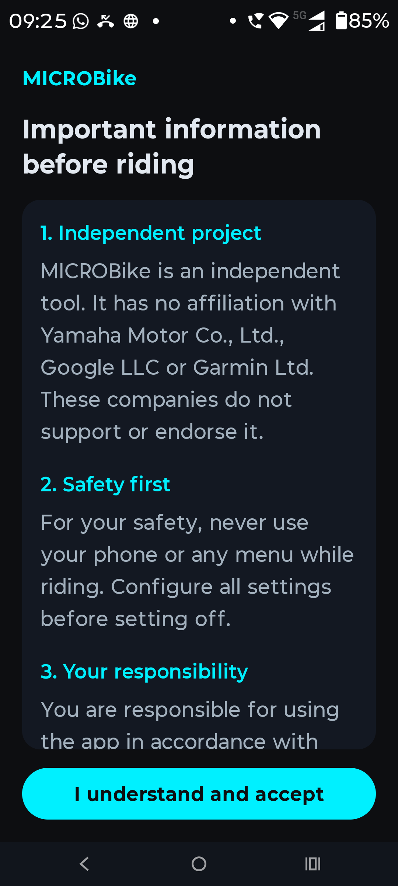
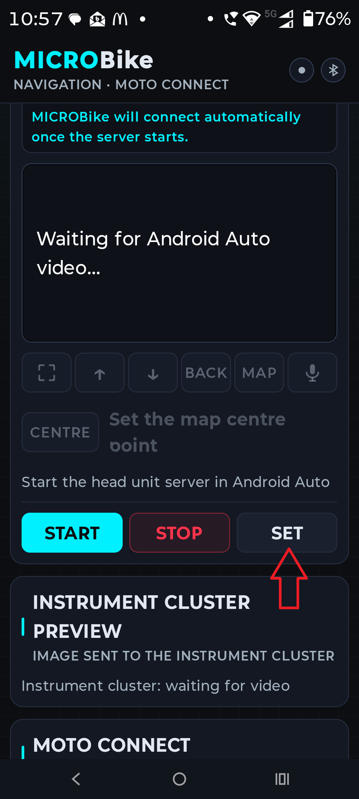
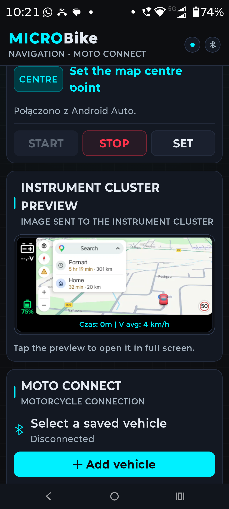
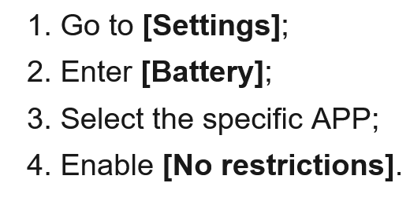

Partie 1 · Démarrage rapide
1. Prérequis, premier lancement et autorisations
Avant de commencer, préparez :
- Un smartphone sous Android 12 ou plus récent (API 31+).
- Android Auto installé et activé (préinstallé sur la plupart des appareils récents).
- L’application MICROBike installée.
- Un Yamaha NMAX 125 Tech Max (2025/2026) équipé du module YCCU / Garmin CCU. Vous pouvez également tester l’aperçu Android Auto chez vous sans scooter ni Bluetooth.
Sécurité avant tout : effectuez toujours la configuration, l’appairage Bluetooth et la calibration du point de centrage à l’arrêt.
Langue de l’application : l’interface de MICROBike est actuellement disponible en anglais et en polonais (d’autres langues suivront). Les libellés anglais des boutons figurent donc entre parenthèses dans ce guide.
- Acceptez l’écran d’accueil. Au premier lancement, lisez les consignes de sécurité (Important information before riding) et appuyez sur I understand and accept.
- Suivez l’assistant d’autorisations (App permissions). Chaque autorisation peut être accordée tout de suite ou ignorée avec Skip puis modifiée plus tard :
- Appareils à proximité (Nearby devices) pour le compteur — indispensable pour détecter et connecter le YCCU et lire la tension de batterie.
- Position précise (GPS) (Precise location) recommandée — active la vitesse GPS vers Android Auto, les statistiques de trajet, le thème jour/nuit automatique et le mode MENU à l’arrêt.
- Notifications MICROBike Android 13+ — affiche les notifications Bluetooth et GPS avec boutons d’arrêt rapide.
- État du téléphone (Phone state) et Accès aux notifications (OSD) optionnels — affichent le nom de l’appelant, la durée d’appel et le titre du morceau sur l’écran TFT.
- Affichage par-dessus d’autres applis (Display over other apps) optionnel — permet de lancer un itinéraire depuis le menu du compteur (Domicile, Travail, Favoris) lorsque MICROBike est en arrière-plan.

images/01-ekran-powitalny.png
Écran d’accueil avec les consignes de sécurité et le bouton d’acceptation.

images/02-uprawnienia-kreator.png
Assistant “App permissions” (étape 1 sur 6 — Nearby devices).
2. Activer le serveur développeur Android Auto
MICROBike reçoit le flux vidéo directement depuis le serveur local intégré à Android Auto sur votre téléphone. Le mode développeur ne s’active qu’une seule fois ; le serveur de l’unité principale doit être démarré avant de rouler s’il a été arrêté ou après un redémarrage du téléphone.
- Ouvrez les paramètres Android Auto depuis MICROBike. Dans la carte supérieure NAVIGATION STREAM, touchez SET. Si Android Auto n’est pas installé, touchez d’abord Open Google Play.
- Débloquez le mode développeur (une seule fois). Faites défiler jusqu’en bas des paramètres Android Auto et appuyez 10 fois sur « Version ».
- Confirmez la boîte de dialogue. À la question « Autoriser les paramètres développeur ? », appuyez sur OK.
- Démarrez le serveur de l’unité principale. Ouvrez le menu ⋮ en haut à droite et choisissez Démarrer le serveur de l’unité principale (Start head unit server). Une notification confirme son lancement.
- Revenez dans MICROBike. L’application détecte le serveur et se connecte automatiquement (le voyant supérieur passe au cyan et l’aperçu de la carte s’affiche). Si vous aviez arrêté la projection manuellement, appuyez sur START.

images/03-aa-przycisk-set.png
Carte “NAVIGATION STREAM” avec le bouton SET en bas.

images/04-aa-ustawienia-wersja.png
Bas des paramètres Android Auto mettant en évidence “Version” (10 appuis).

images/05-aa-tryb-programisty.png
Fenêtre Android Auto autorisant les paramètres développeur (OK).

images/06-aa-uruchom-serwer.png
Menu ⋮ en haut à droite avec “Démarrer le serveur de l’unité principale / Start head unit server”.

images/07-aa-podglad-live.png
Retour dans MICROBike : carte Android Auto visible en direct.
Bon à savoir : le serveur Android Auto fonctionne uniquement en local sur votre téléphone (127.0.0.1) et ne nécessite aucun câble USB.
Documentation officielle Google sur le serveur d’unité principale Android Auto
3. Appairage et connexion au compteur Yamaha
- Appairez le scooter dans Android. Mettez le contact du scooter et activez le Bluetooth sur le téléphone. Dans les paramètres Bluetooth d’Android, appairez le module dont le nom commence par YCCU.
- Fermez les applications concurrentes. Fermez StreetCross (et Yamaha MyRide si vous utilisez le relevé batterie), car le compteur n’accepte qu’une seule connexion de navigation à la fois.
- Ajoutez votre véhicule dans MICROBike. Dans la carte MOTO CONNECT, appuyez sur + Add vehicle. La recherche YCCU dure jusqu’à 15 secondes.
- Sélectionnez le YCCU détecté. Le véhicule est enregistré (jusqu’à 3 véhicules) et MICROBike se connecte aussitôt.
- Vérifiez l’écran TFT. Après authentification, l’écran d’attente MICROBike s’affiche puis laisse place à la carte dès la première image Android Auto.

images/08-bluetooth-parowanie-yccu.png
Paramètres Bluetooth d’Android montrant l’appareil “YCCU...” appairé.

images/09-moto-connect-polaczono.png
Carte “MOTO CONNECT” avec véhicule enregistré et statut “Connected”.
Prêt à rouler ! Avant votre premier trajet, choisissez votre application de navigation dans l’aperçu Android Auto (Google Maps, Waze, etc.), testez CENTRE et activez si souhaité Auto-start with ignition.
Partie 2 · Guide détaillé des fonctions
Flux de navigation et calibration tactile
La carte NAVIGATION STREAM (LIVE PREVIEW · 1280 × 720) affiche l’interface interactive Android Auto. En haut de l’application, deux voyants indiquent l’état : le point pour Android Auto et l’icône Bluetooth pour le compteur Yamaha (cyan = connecté, ambre = connexion/tentative, rouge = erreur, gris = déconnecté).
Boutons sous l’aperçu
- Plein écran
- Affiche l’aperçu interactif en plein écran (avec rotation de l’écran sans couper le flux). Quittez via Close full-screen view.
- ↑ et ↓
- Boutons virtuels du guidon reproduisant exactement les clics simples, doubles, triples et modes OSD des touches physiques du scooter.
- BACK
- Envoie Retour puis appuie sur le point enregistré CENTRE pour recentrer la carte.
- MAP
- Ramène immédiatement l’application de navigation au premier plan dans Android Auto.
- Microphone
- Déclenche l’assistant vocal Android Auto.
- CENTRE
- Appuie aux coordonnées enregistrées du bouton boussole/recentrage sur la carte.
- Set the map centre point
- Lance la calibration : appuyez dessus puis touchez l’icône de recentrage/boussole dans l’aperçu actif. Recalibrez après un changement d’application de carte ou de DPI.
- START / STOP / SET
- START relance la connexion Android Auto, STOP arrête manuellement la projection et SET ouvre les paramètres Android Auto. En cas de coupure imprévue, MICROBike tente automatiquement jusqu’à 3 reconnexions (STOP manuel annule la reprise).

images/10-kalibracja-wysrodkuj.png
Carte “NAVIGATION STREAM” avec la rangée de boutons et “Set the map centre point”.
Aperçu compteur et affichage sur l’écran TFT
La carte INSTRUMENT CLUSTER PREVIEW reflète fidèlement l’image envoyée au TFT de votre Yamaha NMAX. Touchez l’aperçu pour l’ouvrir en plein écran.
- Écran d’attente MICROBike
- Lorsque le compteur est authentifié mais qu’Android Auto n’envoie pas encore d’image (ou que la projection est arrêtée), l’écran TFT affiche le bandeau d’attente MICROBike jusqu’à la première image carte.
- Barre latérale de télémétrie (alimentation)
- Dans la marge gauche, au-dessus et au-dessous des flèches d’origine du compteur :
- En haut — tension de la batterie du scooter, ex.
14.1V(ou--.-Vblanc sans mesure récente). - En bas — batterie du téléphone, ex.
82%(vert en niveau normal ; éclair jaune à gauche pendant la charge ;--%blanc si indisponible). - Sous le seuil configuré la couleur change ; en alerte critique l’indicateur clignote en rouge toutes les 0,5 s (voir Batterie et alertes).
- En haut — tension de la batterie du scooter, ex.
- Carte OSD contextuelle (coin supérieur droit)
- En modes MEDIA, MENU et CALL, une carte compacte rappelle l’action de ↑ et ↓. En appel actif, elle affiche l’état réel du micro Android : MIC cyan (actif), micro barré rouge (coupé) ou MIC ? gris (inconnu). Chaque action carte affiche une confirmation pendant 2 secondes.
- Barre de statut inférieure du compteur
- Remplace le texte d’origine sous la carte par une télémétrie contextuelle :
- Modes MAP et MENU : temps de roulage (
Time:au-dessus de 2 km/h) et vitesse moyenne (Avg:). Vide si le GPS téléphone est coupé. - Mode MEDIA : statut
[PLAY]/[PAUSE]et titre du morceau (nécessite l’Accès aux notifications). - Mode CALL : nom ou numéro de l’appelant et durée d’appel, ou alerte d’appel entrant.
- Alerte défaut de charge (priorité absolue) : avec GPS >30 km/h et tension <13,8 V, affiche
! NOT CHARGING.avec le voltage mesuré.
- Modes MAP et MENU : temps de roulage (

images/11-podglad-licznika-tft.png
Aperçu TFT Yamaha NMAX : carte, barre latérale tension/batterie, carte OSD et barre inférieure.
Commandes au guidon et modes OSD
Les boutons physiques ↑ et ↓ du guidon (ainsi que les flèches virtuelles) gèrent les appuis simples, doubles et triples dans une fenêtre de 650 ms, sur quatre modes contextuels.
| Mode OSD | ↑ (1×) | ↓ (1×) | Retour automatique |
|---|---|---|---|
| MAP (par défaut) | Par défaut : Cycle zoom (+ / − / centrer)* | Par défaut : Back + centrer* | Mode de base |
| MEDIA | Piste suivante | Lecture / Pause | Après 20 s d’inactivité → MAP |
| MENU (Accueil AA) | Élément suivant (rotary +1) | Valider (SELECT) | Après 60 s ou en roulant → MAP |
| CALL (entrant) | Décrocher | Refuser | En fin d’appel → MAP |
| CALL (en cours) | Couper / réactiver le micro | Raccrocher | En fin d’appel → MAP |
* Les appuis simples (↑ 1× et ↓ 1×) en mode MAP sont personnalisables dans les paramètres.
Gestes globaux (actifs dans tous les modes)
- ↑ deux fois (2×)
- Fait défiler les modes OSD : MAP → MEDIA → MENU → CALL (CALL n’apparaît que pendant un appel).
- ↓ deux fois (2×)
- Lance l’assistant vocal (Voice) Android Auto.
- ↑ ou ↓ trois fois (3×)
- Désactivés par défaut (No action). Vous pouvez leur attribuer une action globale ; cela ajoute un délai de 650 ms sur le double-clic correspondant.
Points clés
- Cycle zoom (+ / − / centrer) : enchaîne zoom avant, zoom arrière, puis retour + centrage (réinitialisé après 10 s de pause).
- Mode MENU (à l’arrêt uniquement) : par sécurité, MENU n’est accessible qu’avec le GPS téléphone actif et 0 km/h confirmé. L’entrée ouvre l’accueil Android Auto ; démarrer, perdre le GPS ou le couper ramène automatiquement sur la carte.
- Personnalisation (5. Handlebar buttons) : modifiez 1× en mode MAP et les 3× globaux, avec réinitialisation par Restore default buttons.

images/12-przyciski-kierownicy.png
Section “5. Handlebar buttons” avec les gestes UP/DOWN 1×, 2×, 3×.
Moto Connect et démarrage automatique au contact
Moto Connect (véhicules enregistrés)
- Enregistrez jusqu’à 3 modules YCCU et reconnectez-vous d’un simple geste.
- Le bouton X retire le véhicule de MICROBike sans supprimer son appairage Bluetooth dans Android.
- Disconnect met fin à la connexion active (et désactive l’Auto-start éventuel).
Démarrage automatique au contact (Auto-start with ignition)
- Désactivé par défaut : choisissez un véhicule enregistré puis activez l’interrupteur.
- Fonctionnement : un service Bluetooth en arrière-plan avec notification réessaie environ toutes les 30 s (8 s max par tentative) ; les événements Bluetooth accélèrent la tentative suivante.
- Après redémarrage du téléphone : la veille reprend automatiquement après le premier déverrouillage (selon les règles batterie du système). Utilisez Resume standby si nécessaire.
- Prérequis en arrière-plan : le serveur d’unité principale Android Auto doit déjà tourner. La projection démarre après l’authentification YCCU.
Important : appuyer sur Disconnect désactive l’Auto-start. Désactivez-le toujours avant d’ouvrir Yamaha MyRide ou StreetCross.

images/13-autostart-po-zaplonie.png
Carte “Auto-start with ignition” activée avec un scooter YCCU sélectionné.
Affichage, applications de carte, thème et DPI
- 1. Mode d’affichage sur le scooter (Scooter display mode)
- No dock (par défaut) masque la barre d’applications gauche d’Android Auto pour maximiser la carte sur le TFT ; Full screen conserve toute l’interface avec sa barre latérale.
- 2. Cartes sur le scooter et le téléphone
- L’application de navigation affichée sur le scooter se choisit dans le menu Android Auto. L’option Also open the map app on your phone peut ouvrir automatiquement sur le téléphone une application installée prise en charge (Google Maps, Yanosik, Waze, Organic Maps, OsmAnd, OsmAnd+) lors de la connexion Android Auto, sans changer la carte active sur le scooter.
- 3. Luminosité / Thème jour-nuit (Brightness)
- Choisissez Light (jour), Dark (nuit) ou Auto, qui calcule localement l’aube et le crépuscule civils à partir de la dernière position GPS et de l’heure du téléphone toutes les 10 minutes (hors ligne ; nécessite Position précise).
- 4. Densité d’affichage (Display density · DPI)
- Choisissez entre 120, 140, 160 (par défaut) et 180 DPI. Un DPI élevé agrandit boutons et textes ; un DPI bas élargit la carte. La modification reconnecte brièvement Android Auto : vérifiez ensuite la calibration de CENTRE.

images/14-ustawienia-obrazu-dpi.png
Carte SETTINGS : No dock / Full screen, Brightness (Light / Dark / Auto) et curseur DPI (120–180).
Domicile, Travail, Favoris et partage Google Maps
MICROBike relie le menu de navigation intégré du compteur Yamaha à Google Maps sur votre téléphone. Toutes vos adresses restent enregistrées uniquement sur votre appareil.
Enregistrer un lieu directement depuis Google Maps
- Ouvrez un lieu ou un repère dans Google Maps.
- Appuyez sur Partager puis choisissez MICROBike.
- Sélectionnez Save as Home (Domicile), Save as Work (Travail), Add to favourites (jusqu’à 5 Favoris) ou Navigate to this place.

images/15-google-maps-udostepnij.png
Écran “PLACE FROM GOOGLE MAPS” après Partager → MICROBike.
Utilisation depuis l’application et le menu du compteur
- Domicile et Travail : aussi modifiables dans les Paramètres (Ride home / Ride to work) et accessibles depuis le menu du compteur.
- Favoris (5 max) : nom et adresse synchronisés dans le menu Favoris du compteur (sans calcul de distance ni d’orientation dans la liste).
- Station-service la plus proche (Nearest petrol station) : lance la recherche des stations-service proches dans Google Maps, y compris depuis le compteur.
- Arrêt d’itinéraire : la commande d’arrêt du compteur demande à Google Maps de quitter la navigation en cours.
Astuce : accordez Affichage par-dessus d’autres applis pour lancer les itinéraires du compteur lorsque MICROBike tourne en arrière-plan. Si Google Maps a déjà un itinéraire actif ne pouvant être fermé automatiquement, arrêtez-le manuellement pour éviter que la nouvelle destination ne soit ajoutée en étape.
Vitesse GPS et statistiques de trajet
La carte GPS speed → Android Auto utilise le GPS du téléphone (activé automatiquement une fois la position précise accordée ; toute désactivation manuelle via Phone GPS est mémorisée).
- Vitesse vers Android Auto : les mesures récentes (≤5 s) sont transmises à Android Auto pour adapter automatiquement le zoom de la carte. Une perte de signal n’est jamais envoyée comme 0 km/h.
- Statistiques dans la barre inférieure : calcule le temps de roulage (>2 km/h) et la vitesse moyenne dans tous les modes OSD. Remise à zéro via Reset ride statistics.
- Sécurité MENU et contrôle de charge : déverrouille MENU à 0 km/h et active l’alerte de charge au-dessus de 30 km/h.
Batterie du scooter et alertes d’alimentation
La carte SCOOTER BATTERY lit la tension de batterie (en volts) directement depuis le module CCU en Bluetooth Low Energy, sans avoir besoin du GPS.
- Mesure automatique : démarre 2 s après l’authentification du compteur puis se rafraîchit toutes les 30 secondes (mesure valide pendant 10 minutes).
- Mesure manuelle : appuyez sur Check voltage avec le contact mis et Yamaha MyRide / StreetCross fermés.
- Seuils personnalisables (en bas de SETTINGS) : batterie téléphone 10%–50% (par défaut 20% hors charge) et batterie scooter 12,0–12,5 V (par défaut 12,4 V).
Alertes critiques clignotantes sur l’écran TFT
| Situation | Déclencheur | Affichage TFT |
|---|---|---|
| Batterie scooter critique | Tension ≤ 11,5 V | L’indicateur de tension clignote en rouge (toutes les 0,5 s). |
| Défaut de charge en roulant | GPS > 30 km/h et tension < 13,8 V | La tension clignote en rouge et la barre inférieure affiche ! NOT CHARGING.. |
| Batterie téléphone critique | Niveau ≤ 10% (hors charge) | La batterie téléphone clignote en rouge (toutes les 0,5 s). |
| Normal / En charge | Au-dessus des seuils | Affichage fixe ; batterie téléphone verte (avec éclair jaune en charge). |

images/16-gps-i-akumulator.png
Cartes “GPS speed → Android Auto” et “SCOOTER BATTERY” avec tension en V.
Autorisations, langue et confidentialité
Vous pouvez vérifier ou modifier chaque autorisation à tout moment dans App permissions (Manage permissions).
| Autorisation | Utilité | Ce qui fonctionne sans elle |
|---|---|---|
| Appareils à proximité | Recherche et connexion au compteur YCCU, Auto-start et mesure batterie. | L’aperçu Android Auto fonctionne toujours sur le téléphone. |
| Position précise (GPS) | Vitesse GPS pour Android Auto, statistiques, thème Auto, mode MENU à l’arrêt et alerte de charge. | Projection et compteur fonctionnent ; thème Clair/Sombre manuel. |
| Notifications MICROBike (Android 13+) | Notifications persistantes Bluetooth et GPS avec boutons d’arrêt. | Les services peuvent tourner sans apparaître dans le volet de notifications. |
| État du téléphone | Détection plus fiable des sonneries et appels actifs. Aucun accès aux contacts ni à l’historique. | Détection d’appel via le mode audio du téléphone. |
| Accès aux notifications (OSD) | Nom/numéro de l’appelant, titre du morceau et état de lecture sur le compteur. | Les modes CALL et MEDIA fonctionnent avec des libellés génériques. |
| Affichage par-dessus d’autres applis | Lancement d’itinéraires depuis le menu du compteur avec MICROBike en arrière-plan. | Connexion compteur et lancement d’itinéraires app ouverte fonctionnent normalement. |
Confidentialité et langue
- Traitement local : aucune coordonnée GPS n’est enregistrée ; les données d’appels et de morceaux restent uniquement en mémoire vive durant l’exécution.
- Langue de l’app : MICROBike propose actuellement l’anglais et le polonais (d’autres langues arriveront). Sous Android 13+, changez la langue dans Paramètres → Applications → MICROBike → Langue.
Partie 3 · Aide
Dépannage
L’aperçu Android Auto n’apparaît pas ou reste bloqué sur la connexion
Vérifiez que le serveur d’unité principale est actif (Paramètres Android Auto → ⋮ → Démarrer le serveur de l’unité principale). S’il était déjà démarré, choisissez Arrêter le serveur de l’unité principale, relancez-le, revenez dans MICROBike et appuyez sur START.
MICROBike ne trouve pas le compteur YCCU ou échoue à se connecter
Vérifiez quatre points : le contact est mis, YCCU est appairé dans le Bluetooth d’Android, l’autorisation Appareils à proximité est accordée et StreetCross ainsi que Yamaha MyRide sont totalement fermées. Réessayez ensuite dans MOTO CONNECT.
La projection s’arrête écran éteint (notamment Xiaomi / MIUI / HyperOS)
L’économiseur de batterie peut mettre Android Auto ou MICROBike en veille dès le verrouillage de l’écran :
- Ouvrez Paramètres → Applications → Android Auto (Infos sur l’appli).
- Si disponible, activez Démarrage automatique en arrière-plan.
- Ouvrez Économiseur de batterie / Batterie et choisissez Aucune restriction.
- Si le système arrête aussi MICROBike, répétez ces étapes pour MICROBike.

images/17-xiaomi-bateria.png
Paramètres Android Auto / MICROBike sur Xiaomi : Démarrage auto activé et Batterie “Aucune restriction”.
CENTRE ou Back + centre clique à côté du bouton sur la carte
À l’arrêt, ouvrez la carte dans l’aperçu MICROBike, appuyez sur Set the map centre point puis touchez le centre de l’icône boussole/recentrage dans la zone active de la carte.
Impossible de passer en mode MENU depuis le guidon
MENU est bloqué en roulant par sécurité et exige trois conditions : Position précise accordée, Phone GPS activé et mesure fraîche à 0 km/h (en garage sans réception GPS, MENU reste indisponible).
Le nom de l’appelant ou le titre du morceau n’apparaît pas sur le compteur
Allez dans App permissions → Manage permissions et activez Accès aux notifications (OSD) ainsi que État du téléphone pour une meilleure détection d’appel.
La lecture de tension batterie échoue ou expire
Assurez-vous que le contact est mis, le véhicule connecté dans MOTO CONNECT et que Yamaha MyRide et StreetCross sont fermées, puis appuyez sur Check voltage.
Domicile / Travail / Favori ajoute une étape au lieu d’un nouvel itinéraire
Si Google Maps suit déjà un itinéraire qui ne peut être arrêté automatiquement, fermez-le manuellement dans Android Auto ou Google Maps puis relancez votre nouvelle destination.
Comment signaler un bug au développeur
Tout en bas de l’écran principal de MICROBike, appuyez sur Report a bug to the developer et décrivez le problème (jusqu’à 1500 caractères) en précisant le modèle de téléphone et la version d’Android. Seul le texte saisi est envoyé (aucun journal ni donnée véhicule) ; n’incluez ni mot de passe ni donnée personnelle.